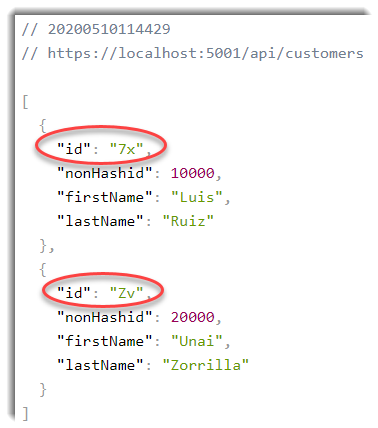
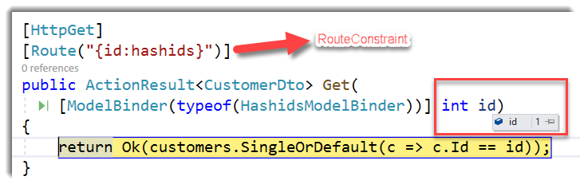
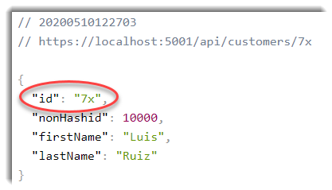

Sometimes developers don’t take care about security concerns when they develop a REST API. I know this scope is not straightforward but at least we should comply with a minimum of basic security rules in order to avoid the most common attacks.
The first thing we must take into account is to avoid using predictable ids like identity fields. The last vulnerability I’ve seen was a simple bash script which using a for statement it was making calls to the api passing an autoincremental id and retrieving all the confidentials documents from the system. It was an error configuring the authorization of the system, but the use of predictable ids facilitated the attack.
There are some ways to fix this kind of vulnerability, for example using GUIDs to represent this ids but from my side and for many DBA’s there are some caveats on the usage of this approach:
- 4 times larger than the traditional 4-byte index value
- Cumbersome to debug
- They are not monotonically increasing
Looking for a better alternative to avoid exposing our database ids to the clients is to use hashing ids (it creates short, unique, decryptable hashes from unsigned integers). There is a library written in many languages to generate short unique ids from integers hashids and of course there is an available version for .NET hashids.net
A small .NET package to generate YouTube-like hashes from one or many numbers. Use hashids when you do not want to expose your database ids to the user.
I decided to create a PoC to hashing the ids in ASP.NET Core.
First part: Crypt ids
To return my hashing identifiers to my clients, I decided to create a custom JsonConverter to hash integer properties of my DTOs. Given the current limitations of System.Text.Json.Serialization.JsonConverter I couldn’t find a solution 100% acceptable today, but I decided to create a different type other than int with an implicit conversion to and-from int.
public struct HashidInt
{
private int _value;
public static implicit operator HashidInt(int value)
{
return new HashidInt { _value = value };
}
public static implicit operator int(HashidInt value)
{
return value._value;
}
}
And my custom JsonConverter looks like this:
public class HashidsJsonConverter : JsonConverter<HashidInt>
{
public override HashidInt Read(ref Utf8JsonReader reader, Type typeToConvert, JsonSerializerOptions options)
{
if (reader.TokenType == JsonTokenType.String)
{
string stringValue = reader.GetString();
return ServiceCollectionExtensions.Hashids.Decode(stringValue)[0];
}
else if (reader.TokenType == JsonTokenType.Number)
{
return reader.GetInt32();
}
throw new JsonException();
}
public override void Write(Utf8JsonWriter writer, HashidInt value, JsonSerializerOptions options)
{
writer.WriteStringValue(ServiceCollectionExtensions.Hashids.Encode(value));
}
}
For me the best solution would be to decorate my DTO like this:
public class CustomerDto
{
[HashId]
public int Id { get; set; }
public int NonHashid { get; set; }
public string FirstName { get; set; }
public string LastName { get; set; }
}
Or using a convention where all the properties named or ended with Id will be hashed, like EntityFramework works with primary keys. Maybe in a future, dotnet team change the current implementation of the JsonConverter and maybe could be possible to achieve one the two approachs I’ve shown you before.
We need to create our DTO using the custom type:
public class CustomerDto
{
public HashidInt Id { get; set; }
public int NonHashid { get; set; }
public string FirstName { get; set; }
public string LastName { get; set; }
}
And also register our custom JsonConverter:
public class ConfigureJsonOptions : IConfigureOptions<JsonOptions>
{
public void Configure(JsonOptions options)
{
options.JsonSerializerOptions.Converters.Add(new HashidsJsonConverter());
}
}
Run our ASP.NET Core API and voilà our ids have been hashed:

Second part: Decrypt ids
As I told you before, hashids.net creates short, unique, decryptable hashes from unsigned integers based on some settings like a salt, alphabet, etc so it’s possible to decrypt it into the original integer value.
To do this, I’ve created a custom route constraint to check if the value of the hash is a hashid:
public class HashidsRouteConstraint
: IRouteConstraint
{
private readonly IHashids hashids;
public HashidsRouteConstraint(IHashids hashids)
{
this.hashids = hashids ?? throw new ArgumentNullException(nameof(hashids));
}
public bool Match(
HttpContext httpContext,
IRouter route,
string routeKey,
RouteValueDictionary values,
RouteDirection routeDirection)
{
if (values.TryGetValue(routeKey, out var value))
{
var hashid = Convert.ToString(value, CultureInfo.InvariantCulture);
var decode = hashids.Decode(hashid);
return decode.Length > 0;
}
return false;
}
}
And also a custom model binding to convert decrypt the hashed value into the original integer:
public class HashidsModelBinder : IModelBinder
{
private readonly IHashids hashids;
public HashidsModelBinder(IHashids hashids)
{
this.hashids = hashids ?? throw new System.ArgumentNullException(nameof(hashids));
}
public Task BindModelAsync(ModelBindingContext bindingContext)
{
if (bindingContext is null)
{
throw new System.ArgumentNullException(nameof(bindingContext));
}
var modelName = bindingContext.ModelName;
var valueProviderResult = bindingContext.ValueProvider.GetValue(modelName);
if (valueProviderResult == ValueProviderResult.None)
{
return Task.CompletedTask;
}
bindingContext.ModelState.SetModelValue(modelName, valueProviderResult);
var value = valueProviderResult.FirstValue;
if (string.IsNullOrEmpty(value))
{
return Task.CompletedTask;
}
var ids = hashids.Decode(value);
if (ids.Length == 0)
{
return Task.CompletedTask;
}
bindingContext.Result = ModelBindingResult.Success(ids.First());
return Task.CompletedTask;
}
}
Now, we can pass our hashed id in the url:
https://localhost:5001/api/customers/7x
And our custom route constraint and model binding will do the magic:


You can find the complete example in my Github repo
Conclusion
In this post I’ve tried to show how important is the security in our REST APIs in order to avoid the most common attacks like for example using predictable ids. I’m going to continue researching about finding a better way to create non-guessable ids and I’ll wait until dotnet team make changes in the current implementation of System.Text.Json.Serialization.
Of course, any feedback is welcome, and I would to know your experiences with this in order to learn alternative ways to do this.


Comments